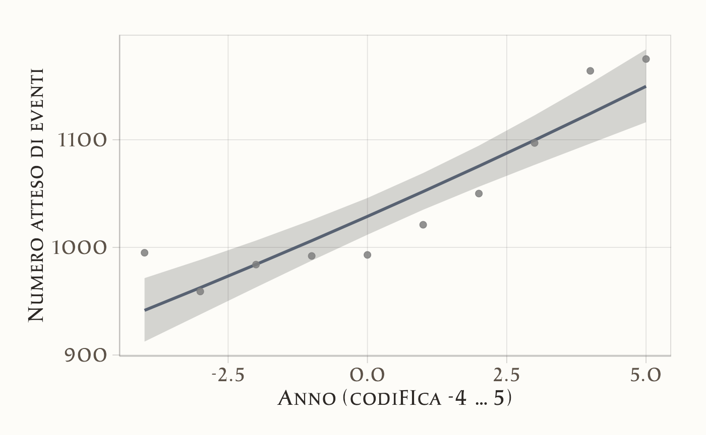
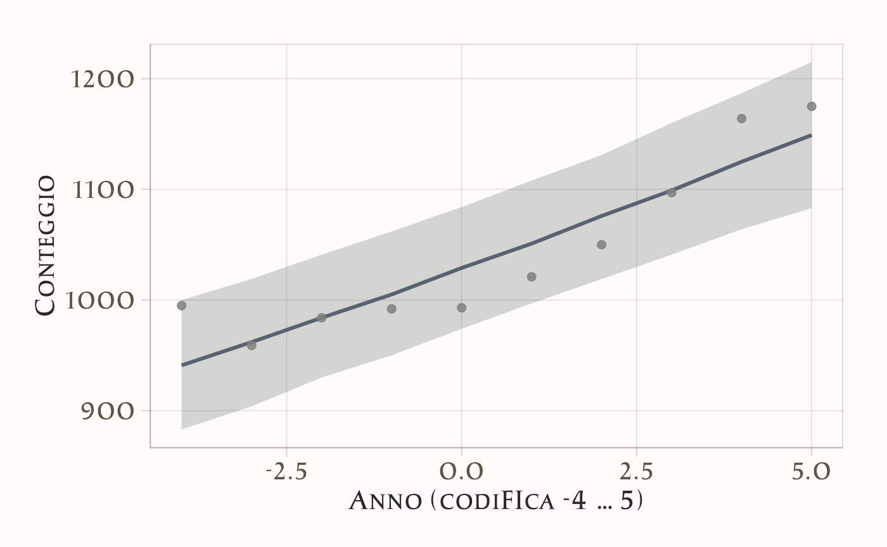
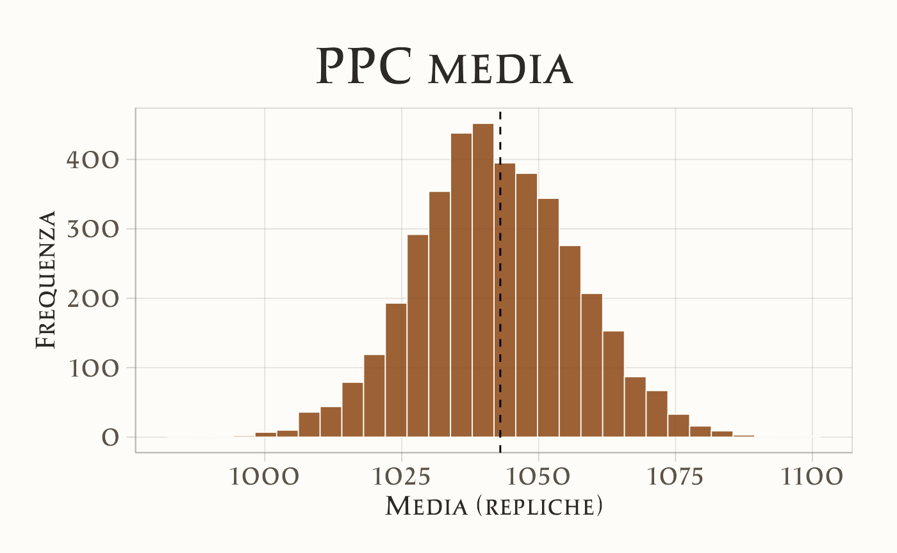
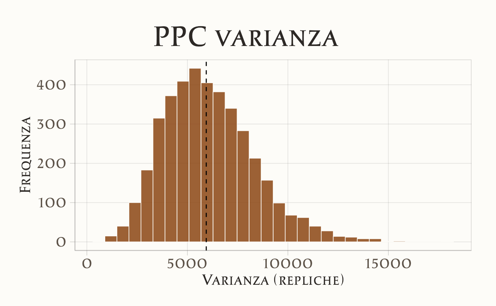

here::here("code", "_common.R") |>
source()
# Load packages
if (!requireNamespace("pacman")) install.packages("pacman")
pacman::p_load(cmdstanr, HDInterval, lubridate, brms, bayesplot, tidybayes, posterior, tidyr)39 Modello di Poisson
Introduzione
Nelle sezioni precedenti abbiamo visto come i modelli lineari generalizzati possano estendere la logica della regressione a esiti non continui, come variabili dicotomiche o proporzioni. Un altro tipo di dati molto comune nella ricerca psicologica e sociale è costituito dai conteggi: quante volte si verifica un certo evento in un intervallo di tempo o in un contesto definito. Pensiamo, ad esempio, al numero di errori commessi in un compito cognitivo, al numero di episodi di un comportamento clinicamente rilevante, o al numero di interazioni osservate in un gruppo.
Per modellare questi dati ricorriamo alla regressione di Poisson, che assume che la variabile di risposta \(Y\) segua una distribuzione di Poisson e che il logaritmo del suo valore atteso possa essere espresso come una combinazione lineare di parametri sconosciuti. In questo modo, possiamo descrivere il tasso medio di occorrenza di un evento e studiare come esso vari al variare dei predittori.
In questo capitolo utilizzeremo CmdStan per stimare un modello di Poisson in chiave bayesiana. Dopo aver esaminato la media a posteriori e l’incertezza associata al tasso di sparatorie fatali da parte della polizia negli Stati Uniti per ciascun anno, ci chiederemo se vi siano evidenze di una tendenza crescente nel tempo. Questo esempio, oltre a illustrare il funzionamento del modello di Poisson, mostra anche come i GLM possano essere applicati a dati di grande rilevanza sociale.
Per chi volesse approfondire il contesto sostantivo, segnaliamo l’articolo Racial Disparities in Police Use of Deadly Force Against Unarmed Individuals Persist After Appropriately Benchmarking Shooting Data on Violent Crime Rates [Ross et al. (2021)], che offre uno sfondo importante al fenomeno analizzato. La lettura non è obbligatoria per seguire il capitolo, ma aiuta a comprendere meglio il valore applicativo di questo tipo di analisi.
Panoramica del capitolo
- Introduzione alla regressione di Poisson per dati di conteggio.
- Studio dell’andamento temporale delle sparatorie fatali della polizia USA (2015-2024).
- Implementazione del modello in Stan.
- Posterior predictive check e analisi degli Incidence Rate Ratios (IRR).
- Traduzione dei coefficienti in termini di conteggi attesi e trend percentuale annuo.
39.1 Regressione di Poisson
La regressione di Poisson è un caso di GLM per variabili di risposta di conteggio (0, 1, 2, …). Denoteremo con \(\lambda_i\) il valore atteso (e, sotto il modello di Poisson, anche la varianza) del conteggio \(Y_i\) alla \(i\)-esima osservazione.
39.1.1 Distribuzione di base
Una variabile casuale di Poisson ha funzione di massa
\[ \Pr(Y=y)=\frac{\lambda^{\,y}e^{-\lambda}}{y!},\qquad y\in\{0,1,2,\dots\}, \] dove \(\lambda>0\) è sia media sia varianza: \(\mathbb{E}[Y]=\lambda,\ \mathrm{Var}(Y)=\lambda\).
Nel contesto del modello di regressione,
\[ Y_i \mid \mathbf{x}_i \sim \text{Poisson}(\lambda_i), \qquad \lambda_i>0 . \]
39.1.2 Forma GLM e funzione di legame
Per garantire \(\lambda_i>0\) si usa il link logaritmico (naturale):
\[ \log \lambda_i = \eta_i \quad\text{con}\quad \eta_i = \alpha + \mathbf{x}_i^\top \boldsymbol{\beta}. \] Equivalente a:
\[ \lambda_i = \exp(\alpha + \mathbf{x}_i^\top \boldsymbol{\beta}). \]
Nota terminologica: il link è \(\log(\cdot)\); l’esponenziale è la sua inversa. Non è corretto chiamare “link esponenziale”.
39.1.3 Conteggi e predittori
Nel modello di regressione di Poisson assumiamo che ciascun conteggio \(Y_i\) segua una distribuzione di Poisson con media \(\lambda_i\). Il legame tra la media \(\lambda_i\) e le variabili esplicative è dato dalla funzione logaritmica:
\[ \log \lambda_i = \alpha + \mathbf{x}_i^\top \boldsymbol{\beta}. \] In questo modo il numero medio di eventi attesi \(\lambda_i\) viene sempre stimato come un valore positivo:
\[ \lambda_i = \exp(\alpha + \mathbf{x}_i^\top \boldsymbol{\beta}). \] Questa formulazione è adatta quando tutti i conteggi si riferiscono a intervalli di osservazione uguali (per esempio, il numero di episodi aggressivi in un anno per ciascuno studente). In tal caso non serve introdurre ulteriori correzioni: il modello lavora direttamente sui conteggi osservati.
39.1.4 Interpretazione dei coefficienti
Nel modello di regressione di Poisson ogni osservazione \(Y_i\) segue
\[ Y_i \sim \text{Poisson}(\lambda_i), \qquad \log \lambda_i = \alpha + \mathbf{x}_i^\top \boldsymbol{\beta}. \] Qui \(\lambda_i\) è il numero medio di eventi attesi per l’osservazione \(i\).
Per il j-esimo predittore \(x_{ij}\), il rapporto tra i valori attesi quando \(x_{ij}\) aumenta di 1 unità è
\[ \frac{\lambda_i(x_{ij}+1)}{\lambda_i(x_{ij})} = \exp(\beta_j). \] Questo significa che \(\exp(\beta_j)\) è il fattore moltiplicativo atteso sul numero medio di eventi per un incremento unitario di \(x_{ij}\).
- Se \(\beta_j = 0\), non c’è effetto (\(\exp(\beta_j)=1\)).
- Se \(\beta_j > 0\), i conteggi attesi crescono moltiplicati per \(\exp(\beta_j)\).
- Se \(\beta_j < 0\), i conteggi attesi diminuiscono, divisi per \(\exp(|\beta_j|)\).
Per variabili binarie, \(\exp(\beta_j)\) confronta direttamente i due gruppi (1 contro 0).
Esempio. Se studiamo il numero di episodi aggressivi in un anno per ciascuno studente, il modello può essere scritto come
\[ \log \lambda_i = \beta_0 + \beta_1 \,\text{Stress}_i + \beta_2 \,\text{Supporto}_i + \beta_3 \,\text{Depressione}_i. \] Qui \(\exp(\beta_1)\) indica di quanto si moltiplica il numero medio di episodi aggressivi attesi quando lo stress aumenta di 1 unità, a parità delle altre variabili.
39.1.5 Assunzioni di base
Per usare la regressione di Poisson facciamo alcune ipotesi semplici:
- Risposta a conteggio: la variabile dipendente è un numero intero non negativo (0, 1, 2, …).
- Indipendenza: le osservazioni sono considerate indipendenti tra loro.
- Media = varianza: nella distribuzione di Poisson la media e la varianza coincidono. Se nei dati la varianza è molto più grande della media, il modello di Poisson può non essere adatto.
- Relazione log-lineare: il logaritmo del numero medio di eventi è una combinazione lineare dei predittori.
39.1.6 Come il modello rappresenta lambda
Nella regressione di Poisson non stimiamo direttamente il valore medio \(\lambda_i\), ma il suo logaritmo:
\[ \eta_i = \log \lambda_i = \alpha + \mathbf{x}_i^\top \boldsymbol{\beta}. \]
-
Caso senza predittori: il modello stima solo l’intercetta \(\alpha\). In questo caso
\[ \lambda = \exp(\alpha). \]
-
Caso con predittori: dati i valori delle variabili esplicative \(\mathbf{x}_i\), il numero medio di eventi per l’osservazione \(i\) è
\[ \lambda_i = \exp\big(\alpha + \mathbf{x}_i^\top \boldsymbol{\beta}\big). \] In altre parole, il modello lavora sempre sulla scala logaritmica (più semplice da trattare matematicamente), e poi si passa alla scala naturale dei conteggi applicando l’esponenziale.
39.2 La domanda di ricerca
Grazie all’archivio pubblico del Washington Post disponiamo di tutti i casi di sparatorie fatali accadute negli Stati Uniti dal 2015 in poi. L’interesse è stimare quante se vi siano evidenze di una tendenza all’aumento di tale tasso nel corso del tempo.
Importiamo e prepariamo i dati:
url <- "https://raw.githubusercontent.com/washingtonpost/data-police-shootings/master/v2/fatal-police-shootings-data.csv"
raw <- read.csv(url, stringsAsFactors = FALSE)
raw$date <- as.Date(raw$date)
raw$year <- lubridate::year(raw$date)
# Escludiamo il 2025 perché l’anno è ancora in corso e i dati sarebbero incompleti
shootings <- subset(raw, year < 2025)
df <- shootings %>%
dplyr::count(year, name = "events")
df
#> year events
#> 1 2015 995
#> 2 2016 959
#> 3 2017 984
#> 4 2018 992
#> 5 2019 993
#> 6 2020 1021
#> 7 2021 1050
#> 8 2022 1097
#> 9 2023 1164
#> 10 2024 1175Per facilitare l’interpretazione, centriamo la colonna year. In questo modo, l’intercetta si riferità all’anno 2019.
df <- df |>
mutate(year = year - 2019)
df
#> year events
#> 1 -4 995
#> 2 -3 959
#> 3 -2 984
#> 4 -1 992
#> 5 0 993
#> 6 1 1021
#> 7 2 1050
#> 8 3 1097
#> 9 4 1164
#> 10 5 1175A questo punto abbiamo una tabella df con due colonne: year (centrato), che va dal -4 (2015) a 5 (2024), ed events, che contiene il numero di sparatorie fatali registrate in ciascun anno.
39.2.1 Modello Stan
Definiamo il seguente modello
stan_code <- '
data {
int<lower=1> N;
array[N] int<lower=0> y; // conteggi
vector[N] year; // -4, -3, ..., 5 (non standardizzato)
}
parameters {
real alpha; // log media per anno 0
real beta; // effetto per 1 anno (log-IRR per anno)
}
model {
// Priors coerenti con: lambda ~ 600 circa, 400–900 plausibile
alpha ~ normal(6.4, 0.25); // oppure 0.30 se preferisci più ampia
beta ~ normal(0, 0.05); // oppure 0.10 se vuoi più permissiva
// Poisson con link log
y ~ poisson_log(alpha + beta * year);
}
generated quantities {
vector[N] eta = alpha + beta * year;
vector[N] lambda = exp(eta);
array[N] int<lower=0> y_rep;
for (n in 1:N) y_rep[n] = poisson_log_rng(eta[n]);
}
'Specificare la distribuzione a priori:
- Intercetta: \(\alpha=\log\lambda\). Poiché riteniamo plausibile, prima dei dati, una media annua \(\lambda\) centrata attorno a 600, con intervallo ~400–900, imponiamo \(\alpha \sim \mathcal N(6.40,\ 0.25)\) (oppure \(0.30\) per un intervallo un po’ più ampio).
- Pendenza: \(\beta\) è il log-IRR per anno. Attese variazioni annue piccole ⇒ \(\beta \sim \mathcal N(0,\ 0.05)\) (più prudente) oppure \(\mathcal N(0,\ 0.10)\) (più ampia).
Dati:
dat <- data.frame(
year = -4:5,
events = c(995, 959, 984, 992, 993, 1021, 1050, 1097, 1164, 1175)
)
stan_data <- list(
N = nrow(dat),
y = dat$events,
year = dat$year
)
glimpse(stan_data)
#> List of 3
#> $ N : int 10
#> $ y : num [1:10] 995 959 984 992 993 ...
#> $ year: int [1:10] -4 -3 -2 -1 0 1 2 3 4 5Compiliamo il modello e avviamo il campionamento MCMC.
mod <- cmdstan_model(write_stan_file(stan_code))fit <- mod$sample(
data = stan_data, seed = 1234,
chains = 4, parallel_chains = 4
)Estraiamo le quantità derivate di maggiore interesse:
fit$summary(variables = c("alpha", "beta", "lambda"))
#> # A tibble: 12 × 10
#> variable mean median sd mad q5 q95 rhat ess_bulk
#> <chr> <dbl> <dbl> <dbl> <dbl> <dbl> <dbl> <dbl> <dbl>
#> 1 alpha 6.936 6.936 0.010 0.010 6.919 6.953 1.002 2204.738
#> 2 beta 0.022 0.022 0.003 0.003 0.017 0.028 1.001 3921.050
#> 3 lambda[1] 941.474 941.801 17.650 17.035 912.472 971.438 1.001 2679.962
#> 4 lambda[2] 962.558 962.748 15.339 15.008 937.673 988.402 1.001 2529.218
#> 5 lambda[3] 984.125 984.098 13.197 12.980 962.847 1006.315 1.001 2360.153
#> 6 lambda[4] 1006.188 1006.306 11.435 11.412 987.696 1025.400 1.002 2225.370
#> 7 lambda[5] 1028.757 1028.715 10.386 10.218 1011.757 1045.887 1.002 2204.743
#> 8 lambda[6] 1051.845 1051.811 10.420 10.291 1034.962 1069.068 1.001 2432.282
#> 9 lambda[7] 1075.464 1075.166 11.672 11.765 1056.337 1094.511 1.001 2907.241
#> 10 lambda[8] 1099.626 1099.600 13.949 14.347 1076.660 1122.705 1.001 3450.415
#> 11 lambda[9] 1124.344 1124.076 16.959 17.358 1096.501 1152.436 1.002 3873.761
#> 12 lambda[10] 1149.631 1149.272 20.487 20.926 1116.283 1183.948 1.002 4105.120
#> ess_tail
#> <dbl>
#> 1 2351.782
#> 2 3015.859
#> 3 2639.793
#> 4 2550.928
#> 5 2548.232
#> 6 2343.254
#> 7 2351.782
#> 8 2512.354
#> 9 2834.135
#> 10 2973.167
#> 11 2997.796
#> 12 3053.55639.2.2 Interpretazione
Il parametro alpha rappresenta il logaritmo del numero medio atteso di eventi nell’anno di riferimento \(x=0\). Nel nostro modello l’anno 0 è semplicemente il punto centrale della sequenza di anni osservata (−4,…,5).
Il valore stimato è \(\alpha \approx 6.94\), con un intervallo di credibilità al 95% compreso tra 6.92 e 6.95. Trasformando sulla scala naturale, otteniamo:
\[ \exp(\alpha) \approx 1\,030 \] cioè circa 1030 eventi attesi nell’anno di riferimento.
Il parametro beta misura la variazione logaritmica attesa per ogni anno aggiuntivo. La stima \(\beta \approx 0.022\) (ICr 95%: 0.017–0.028) indica una crescita positiva.
Per interpretare questo effetto sulla scala dei conteggi:
\[ \exp(\beta) \approx 1.022 , \] ossia ogni anno in più corrisponde a un aumento atteso di circa +2.2% degli eventi rispetto all’anno precedente.
Se traduciamo questa percentuale in termini assoluti, partendo dal valore base \(\exp(\alpha)\approx 1.030\), otteniamo:
\[ \exp(\alpha)\times(\exp(\beta)-1) \;\approx\; 23 \] quindi in media circa 23 eventi in più per ogni anno successivo.
# Anni da predire (quelli del dataset)
years <- -4:5
# Estrai i draw posteriori di alpha e beta da cmdstanr
# (se vuoi in formato data frame "largo")
draws <- as_draws_df(fit$draws(variables = c("alpha", "beta")))
# Costruisci predizioni posteriori di lambda per ogni anno
pred <- lapply(years, function(y) {
tibble(
year = y,
lambda = exp(draws$alpha + draws$beta * y)
)
}) |>
bind_rows()
# Riassumi: media e intervallo di credibilità 95%
pred_sum <- pred |>
group_by(year) |>
summarise(
lambda_mean = mean(lambda),
lambda_q05 = quantile(lambda, 0.05),
lambda_q95 = quantile(lambda, 0.95),
.groups = "drop"
)
# (opzionale) unisci i dati osservati
dat <- tibble(
year = -4:5,
events = c(995, 959, 984, 992, 993, 1021, 1050, 1097, 1164, 1175)
)
# Grafico: banda 90% (5%-95%), linea media e punti osservati
ggplot(pred_sum, aes(x = year)) +
geom_ribbon(aes(ymin = lambda_q05, ymax = lambda_q95), alpha = 0.2) +
geom_line(aes(y = lambda_mean), linewidth = 1) +
geom_point(data = dat, aes(y = events), size = 2) +
labs(
x = "Anno (codifica -4 … 5)",
y = "Numero atteso di eventi"
) 
Il modello di regressione di Poisson mostra che il numero medio di eventi segue una crescita regolare nel tempo. L’intercetta indica che nell’anno di riferimento (\(x=0\)) ci si attendono circa 1030 eventi, mentre la pendenza suggerisce un incremento annuo di circa +2%, pari a una ventina di eventi in più ogni anno.
La banda di credibilità attorno alla curva stimata conferma che l’incertezza sulle previsioni è contenuta e che l’andamento crescente è chiaramente supportato dai dati. In termini sostantivi, il modello descrive bene una tendenza di crescita graduale ma costante negli anni osservati.
39.2.3 Posterior predictive check
# Dati osservati
dat <- tibble::tibble(
year = -4:5,
events = c(995, 959, 984, 992, 993, 1021, 1050, 1097, 1164, 1175)
)
# Estrai i draw di y_rep in matrice (draws x N)
yrep_mat <- fit$draws(variables = "y_rep") |>
as_draws_matrix()
# Seleziona solo le colonne y_rep[...] mantenendo l'ordine
cols <- grep("^y_rep\\[", colnames(yrep_mat))
yrep_mat <- yrep_mat[, cols, drop = FALSE]
# Calcola quantili per colonna (per ogni anno)
qs <- colQuantiles(yrep_mat, probs = c(0.05, 0.50, 0.95))
pred_sum <- tibble::tibble(
year = dat$year,
q05 = qs[, 1],
q50 = qs[, 2],
q95 = qs[, 3]
)
# Grafico PPC: banda 90% + mediana + punti osservati
ggplot(pred_sum, aes(x = year)) +
geom_ribbon(aes(ymin = q05, ymax = q95), alpha = 0.2) +
geom_line(aes(y = q50), linewidth = 1) +
geom_point(data = dat, aes(y = events), size = 2) +
labs(
x = "Anno (codifica -4 … 5)",
y = "Conteggio"
) 
- La banda ombreggiata rappresenta il 90% della distribuzione predittiva del conteggio per ciascun anno (5%–95%).
- La linea è la mediana predittiva; i punti sono i conteggi osservati.
- Se i punti stanno per lo più dentro le bande, il modello riproduce bene i livelli di conteggio anno per anno.
- Se molti punti cadono fuori (o tutti da un lato), il modello potrebbe essere troppo rigido o mancare di struttura (p.es. overdispersione, forma non lineare nel tempo, effetti non inclusi).
# Media/varianza osservate
mean_obs <- mean(dat$events)
var_obs <- var(dat$events)
# Media/varianza delle repliche (per draw)
mean_rep <- rowMeans(yrep_mat)
var_rep <- apply(yrep_mat, 1, var)
# p-value predittivi (proporzione di repliche >= osservato)
p_mean <- mean(mean_rep >= mean_obs)
p_var <- mean(var_rep >= var_obs)
tibble::tibble(
stat = c("media", "varianza"),
osservato = c(mean_obs, var_obs),
media_rep = c(mean(mean_rep), mean(var_rep)),
p_pred = c(p_mean, p_var)
)
#> # A tibble: 2 × 4
#> stat osservato media_rep p_pred
#> <chr> <dbl> <dbl> <dbl>
#> 1 media 1043 1042. 0.468
#> 2 varianza 5940. 6093. 0.486p1 <- ggplot(data.frame(mean_rep), aes(x = mean_rep)) +
geom_histogram(bins = 30) +
geom_vline(xintercept = mean_obs, linetype = 2) +
labs(title = "PPC media", x = "Media (repliche)", y = "Frequenza")
p2 <- ggplot(data.frame(var_rep), aes(x = var_rep)) +
geom_histogram(bins = 30) +
geom_vline(xintercept = var_obs, linetype = 2) +
labs(title = "PPC varianza", x = "Varianza (repliche)", y = "Frequenza")

Il controllo predittivo mostra che i conteggi osservati ricadono interamente entro le bande di credibilità del modello. Inoltre, la media e la varianza osservate sono molto vicine a quelle prodotte dalle repliche simulate (p-value predittivi ~0.5), il che indica che il modello non sottostima né sovrastima la variabilità dei dati. Nel complesso, questi risultati suggeriscono che la regressione di Poisson con legame log e trend lineare nel tempo fornisce una rappresentazione adeguata dei dati osservati.
39.2.3.1 Incidence Rate Ratio (IRR)
Il valore medio stimato dell’IRR è 1.022, con un intervallo di credibilità al 90% compreso tra 1.017 e 1.028. Questo significa che, a ogni anno in più, il numero medio di eventi attesi aumenta di circa il 2.2%, con un margine di incertezza che va da circa +1.7% a +2.8%.
Poiché l’intero intervallo si colloca sopra 1, il modello suggerisce con elevata credibilità che la tendenza temporale sia effettivamente crescente: non stiamo osservando fluttuazioni casuali, ma un aumento sistematico anno dopo anno.
Il valore medio dell’IRR è 1.022: questo equivale a un incremento di circa +2.2% per anno.
- In termini assoluti, partendo da una media di circa 1030 eventi, un aumento del 2.2% corrisponde a circa +23 eventi all’anno.
- L’intervallo di credibilità (1.017–1.028) implica che l’aumento medio sia compreso tra circa +18 e +29 eventi per anno.
In altre parole, il modello suggerisce che il fenomeno osservato cresce in modo regolare e consistente: ogni anno si verificano in media da una ventina a una trentina di eventi in più rispetto all’anno precedente.
Riflessioni conclusive
In questo capitolo abbiamo visto come il modello di Poisson possa essere usato per descrivere dati che rappresentano conteggi, come il numero di comportamenti osservati in un certo periodo di tempo o la frequenza con cui si manifesta un sintomo. L’idea centrale è semplice: invece di trattare i dati come proporzioni o medie, li consideriamo come eventi che “accadono” con una certa intensità, rappresentata dal parametro \(\lambda\). Questo ci permette di modellare direttamente le frequenze osservate, rispettando la natura discreta e positiva dei dati.
Dal punto di vista psicologico, ciò significa avere uno strumento adatto per studiare fenomeni che non si esprimono in valori continui ma in conteggi (ad esempio, il numero di episodi ansiosi in una settimana, o il numero di errori commessi in un compito). L’approccio bayesiano aggiunge un ulteriore vantaggio: possiamo combinare le informazioni provenienti dai dati con ciò che sappiamo (o ipotizziamo) a priori sul fenomeno, ottenendo una stima che riflette sia l’evidenza empirica sia la nostra conoscenza di base.
Nei prossimi capitoli vedremo come estendere ulteriormente questa logica ad altri tipi di dati e modelli, consolidando l’idea che i GLM rappresentino un quadro flessibile e potente per affrontare molte delle domande classiche della ricerca psicologica.
Bibliografia
Ross, C. T., Winterhalder, B., & McElreath, R. (2021). Racial disparities in police use of deadly force against unarmed individuals persist after appropriately benchmarking shooting data on violent crime rates. Social Psychological and Personality Science, 12(3), 323–332.